| Date | Fixture |
Odds |
Confidence |
Result |
Alerts Home 🏥 = Considerable injuries 🏥🏥 = Major injuries 📉 = Dip in form Note, you may see injuries when expanding match but no alert here, meaning the model does not consider them important. |
Alerts Away 🏥 = Considerable injuries 🏥🏥 = Major injuries 📉 = Dip in form Note, you may see injuries when expanding match but no alert here, meaning the model does not consider them important. |
|
|---|---|---|---|---|---|---|---|
| Mar 9 | Bayern Munich 8:1 Mainz Form: LWD Form: WLD |
2.56 vs -3.28 | 1.26 | 85.59% | 1 | 📉 Home team has a dip in form recently | 📉 Away team has a dip in form recently |
| Mar 10 | Feyenoord 3:0 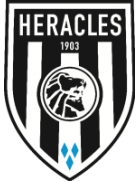 Heracles Form: WWD Form: LLD |
2.51 vs -3.38 | 1.09 | 85.07% | 1 | 🏥 Home team has considerable injuries | 🏥 📉 Away team has considerable injuries and a dip in form recently |
| Mar 10 | Leverkusen 2:0 Wolfsburg Form: WWW Form: DDL |
2.41 vs -3.08 | 1.34 | 84.06% | 1 | 📉 Away team has a dip in form recently | |
| Mar 10 | Benfica 3:1 Estoril Form: WWL Form: LDL |
2.41 vs -3.03 | 1.17 | 84.06% | 1 | 📉 Away team has a dip in form recently | |
| Mar 8 | Galatasaray 6:2 Rizespor Form: WWW Form: LLW |
2.15 vs -3.06 | 1.26 | 81.46% | 1 | 🏥 Home team has considerable injuries | 🏥 📉 Away team has considerable injuries and a dip in form recently |
| Mar 10 | Real Madrid 4:0 Celta Form: DWD Form: LDW |
1.98 vs -3.07 | 1.32 | 79.84% | 1 | 🏥🏥 📉 Home team has MAJOR injuries and a dip in form recently | 🏥 📉 Away team has considerable injuries and a dip in form recently |
| Mar 9 | Arsenal 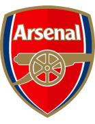 2:1 Brentford Form: WWW Form: LLD |
1.8 vs -3.02 | 1.24 | 78.05% | 1 | 🏥🏥 📉 Away team has MAJOR injuries and a dip in form recently | |
| Mar 10 | Fenerbahce 4:1 Pendikspor Form: WWW Form: LLL |
1.76 vs -2.79 | 1.19 | 77.56% | 1 | 🏥🏥 Home team has MAJOR injuries | 📉 Away team has a dip in form recently |
| Mar 10 | Paris SG 2:2 Reims Form: WDD Form: DWL |
1.71 vs -2.41 | 1.42 | 77.1% | 0.5 | 📉 Home team has a dip in form recently | 📉 Away team has a dip in form recently |
| Mar 9 | RWD Molenbeek 0:3 Anderlecht Form: LDL Form: WWW |
-2.69 vs 1.69 | 1.59 | 76.89% | 1 | ||
| Mar 9 | RB Leipzig 2:0 Darmstadt Form: WLW Form: LDL |
1.68 vs -2.64 | 1.17 | 76.83% | 1 | 🏥🏥 📉 Away team has MAJOR injuries and a dip in form recently | |
| Mar 8 | Go Ahead Eagles 0:1 PSV Eindhoven Form: WLW Form: WWD |
-2.44 vs 1.65 | 1.36 | 76.53% | 1 | ||
| Mar 9 | Cadiz 2:0 Ath Madrid Form: LDD Form: WDW |
-2.36 vs 1.63 | 1.82 | 76.3% | 0 | ||
| Mar 10 | Milan 1:0 Empoli Form: LDW Form: DWL |
1.56 vs -2.24 | 1.46 | 75.65% | 1 | 📉 Home team has a dip in form recently | 📉 Away team has a dip in form recently |
| Mar 8 | Portimonense 0:3 Porto Form: DLD Form: WDW |
-2.3 vs 1.34 | 1.27 | 73.37% | 1 | ||
| Mar 8 | Barcelona 1:0 Mallorca Form: WWD Form: LDW |
1.3 vs -2.54 | 1.48 | 73.02% | 1 | 🏥🏥 Home team has MAJOR injuries | 📉 Away team has a dip in form recently |
| Mar 10 | Arouca 0:3 Sp Lisbon Form: LWW Form: WDW |
-1.79 vs 1.27 | 1.42 | 72.72% | 1 | ||
| Mar 9 | Rio Ave 0:0 Sp Braga Form: LDD Form: WWW |
-1.92 vs 1.26 | 1.8 | 72.64% | 0.5 | ||
| Mar 8 | Stuttgart 2:0 Union Berlin Form: WDW Form: WDL |
1.19 vs -1.8 | 1.54 | 71.94% | 1 | 📉 Away team has a dip in form recently | |
| Mar 10 | West Ham 2:2 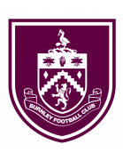 Burnley Form: LWW Form: LLL |
1.11 vs -1.79 | 1.7 | 71.09% | 0.5 | 🏥 📉 Away team has considerable injuries and a dip in form recently | |
| Mar 10 | Club Brugge 3:1 Oud-Heverlee Leuven Form: DLW Form: DDL |
1.11 vs -2.13 | 1.32 | 71.09% | 1 | 🏥🏥 📉 Home team has MAJOR injuries and a dip in form recently | 📉 Away team has a dip in form recently |
| Mar 10 | AZ Alkmaar 4:0 Excelsior Form: WWD Form: LLL |
1.1 vs -1.73 | 1.27 | 70.95% | 1 | 📉 Away team has a dip in form recently | |
| Mar 8 | Nice 1:2 Montpellier Form: LDL Form: WLD |
1.04 vs -1.78 | 1.78 | 70.42% | 0 | 📉 Home team has a dip in form recently | 🏥 📉 Away team has considerable injuries and a dip in form recently |
| Mar 11 | Lazio 1:2 Udinese Form: WLL Form: DLD |
1.01 vs -2.16 | 1.97 | 70.1% | 0 | 🏥 📉 Home team has considerable injuries and a dip in form recently | 🏥🏥 📉 Away team has MAJOR injuries and a dip in form recently |
| Mar 10 | St. Gilloise 1:1 Gent Form: WWW Form: WDL |
0.92 vs -1.92 | 1.66 | 66.81% | 0.5 | 🏥🏥 Home team has MAJOR injuries | 📉 Away team has a dip in form recently |
| Mar 10 | Ajax 2:2 For Sittard Form: DLW Form: LWW |
0.87 vs -1.91 | 1.52 | 64.66% | 0.5 | 🏥🏥 📉 Home team has MAJOR injuries and a dip in form recently | 🏥 Away team has considerable injuries |
| Mar 9 | Bologna 0:1 Inter Form: WWW Form: WWW |
-1.73 vs 0.86 | 2.28 | 64.23% | 1 | ||
| Mar 9 | Twente 2:1 Sparta Rotterdam Form: LWW Form: WLD |
0.83 vs -1.72 | 1.43 | 63.12% | 1 | 🏥 📉 Away team has considerable injuries and a dip in form recently | |
| Mar 9 | Bournemouth 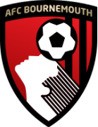 2:2 Sheffield United Form: DLW Form: LLL |
0.8 vs -1.6 | 1.37 | 62.03% | 0.5 | 🏥 📉 Home team has considerable injuries and a dip in form recently | 📉 Away team has a dip in form recently |
| Mar 9 | Kortrijk 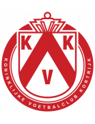 0:1 Antwerp Form: LLW Form: LDW |
-1.69 vs 0.78 | 1.5 | 61.35% | 1 | 🏥 📉 Home team has considerable injuries and a dip in form recently | 📉 Away team has a dip in form recently |
| Mar 10 | Samsunspor 2:1 Ankaragucu Form: DWL Form: LLD |
0.73 vs -1.75 | 2.02 | 59.12% | 1 | 📉 Home team has a dip in form recently | 🏥🏥 📉 Away team has MAJOR injuries and a dip in form recently |
| Mar 10 | Genk 1:0 Standard Form: WWL Form: LLW |
0.7 vs -1.62 | 1.56 | 58.11% | 1 | 🏥🏥 📉 Away team has MAJOR injuries and a dip in form recently | |
| Mar 9 | Granada 2:3 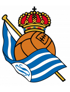 Sociedad Form: DDL Form: WLL |
-1.3 vs 0.69 | 1.94 | 57.74% | 1 | 📉 Home team has a dip in form recently | 📉 Away team has a dip in form recently |
| Mar 8 | Napoli 1:1 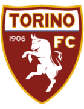 Torino Form: DWW Form: LLD |
0.67 vs -1.66 | 1.89 | 56.93% | 0.5 | 🏥🏥 📉 Away team has MAJOR injuries and a dip in form recently | |
| Mar 9 | Man United 2:0 Everton Form: WLL Form: DDL |
0.63 vs -1.47 | 1.93 | 55.19% | 1 | 🏥🏥 📉 Home team has MAJOR injuries and a dip in form recently | 📉 Away team has a dip in form recently |
| Mar 9 | Girona 2:0 Osasuna Form: LWL Form: WDW |
0.57 vs -1.25 | 1.65 | 52.78% | 1 | ||
| Mar 9 | Guimaraes 1:0 Famalicao Form: DLW Form: WLD |
0.53 vs -1.42 | 1.85 | 51.34% | 1 | 🏥 📉 Home team has considerable injuries and a dip in form recently | 📉 Away team has a dip in form recently |
| Mar 9 | M'gladbach 3:3 FC Koln Form: LWD Form: LDL |
0.52 vs -1.62 | 1.93 | 50.75% | 0.5 | 📉 Home team has a dip in form recently | 🏥🏥 📉 Away team has MAJOR injuries and a dip in form recently |
| Mar 10 | Alaves 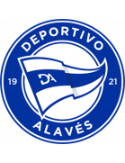 1:0 Vallecano Form: DDL Form: DLD |
0.46 vs -1.18 | 2.24 | 46.49% | 1 | 📉 Home team has a dip in form recently | 🏥 📉 Away team has considerable injuries and a dip in form recently |
| Mar 9 | Trabzonspor 5:1 Karagumruk Form: WWL Form: DDL |
0.46 vs -1.39 | 1.74 | 47.11% | 1 | 🏥🏥 Home team has MAJOR injuries | 📉 Away team has a dip in form recently |
| Mar 10 | Kayserispor 1:1 Hatayspor Form: WWL Form: DLL |
0.39 vs -1.44 | 1.96 | 41.34% | 0.5 | 🏥🏥 Home team has MAJOR injuries | 📉 Away team has a dip in form recently |
| Mar 10 | Juventus 2:2 Atalanta Form: DWL Form: DLL |
0.35 vs -1.09 | 2.34 | 37.98% | 0.5 | 🏥 📉 Home team has considerable injuries and a dip in form recently | 📉 Away team has a dip in form recently |
| Mar 9 | Boavista 1:0 Moreirense Form: LLD Form: LWD |
-1.13 vs 0.28 | 2.86 | 32.02% | 0 | 📉 Home team has a dip in form recently | 🏥🏥 📉 Away team has MAJOR injuries and a dip in form recently |
| Mar 10 | Istanbulspor 1:2 Kasimpasa Form: DLD Form: DLD |
-1.02 vs 0.27 | 1.84 | 31.98% | 1 | 📉 Home team has a dip in form recently | 📉 Away team has a dip in form recently |
| Mar 11 | Gil Vicente 0:0 Chaves Form: WDD Form: WDL |
0.27 vs -1.07 | 1.92 | 31.8% | 0.5 | 📉 Home team has a dip in form recently | 🏥 📉 Away team has considerable injuries and a dip in form recently |
| Mar 9 | Werder Bremen 1:2 Dortmund Form: WDL Form: DLW |
-1.32 vs 0.24 | 1.91 | 29.26% | 1 | 🏥🏥 📉 Home team has MAJOR injuries and a dip in form recently | 📉 Away team has a dip in form recently |
| Mar 10 | Ein Frankfurt 3:1 Hoffenheim Form: DDW Form: LWW |
0.23 vs -1.51 | 2.12 | 28.17% | 1 | 📉 Home team has a dip in form recently | 🏥🏥 Away team has MAJOR injuries |
| Mar 10 | Betis 2:3 Villarreal Form: DWL Form: DWW |
0.22 vs -1.36 | 2.12 | 27.57% | 0 | 📉 Home team has a dip in form recently | 🏥🏥 Away team has MAJOR injuries |
| Mar 9 | Augsburg 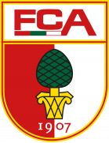 1:0 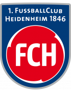 Heidenheim Form: LWW Form: LDL |
0.2 vs -0.89 | 1.92 | 26.1% | 1 | 📉 Away team has a dip in form recently | |
| Mar 8 | Mechelen 3:1 Westerlo Form: WWW Form: WLL |
0.17 vs -0.84 | 1.9 | 23.21% | 1 | 📉 Away team has a dip in form recently | |
| Mar 9 | Waalwijk 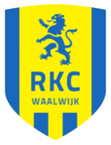 3:1 Vitesse Form: LLL Form: DWL |
0.16 vs -0.9 | 2.28 | 22.91% | 1 | 📉 Home team has a dip in form recently | 📉 Away team has a dip in form recently |
| Mar 9 | Valencia 1:0 Getafe Form: LDD Form: DLD |
0.16 vs -0.94 | 2.06 | 22.45% | 1 | 📉 Home team has a dip in form recently | 🏥 📉 Away team has considerable injuries and a dip in form recently |
| Mar 10 | Lille 2:2 Rennes Form: WLW Form: WDL |
0.14 vs -0.76 | 2.14 | 21.43% | 0.5 | 📉 Away team has a dip in form recently | |
| Mar 9 | Sivasspor 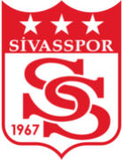 1:2 Alanyaspor Form: DWD Form: DDW |
0.13 vs -0.99 | 2.54 | 20.79% | 0 | 📉 Home team has a dip in form recently | 🏥 📉 Away team has considerable injuries and a dip in form recently |
| Mar 9 | Wolves 2:1 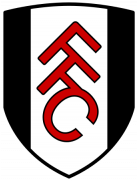 Fulham Form: WWL Form: LWW |
0.12 vs -0.65 | 2.66 | 19.93% | 1 | ||
| Mar 10 | Nijmegen 2:0 Heerenveen Form: DWW Form: LWW |
0.12 vs -0.72 | 2.08 | 19.7% | 1 | ||
| Mar 9 | Buyuksehyr 1:0 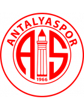 Antalyaspor Form: LWW Form: DLW |
0.1 vs -1.1 | 2.36 | 17.78% | 1 | 🏥🏥 Home team has MAJOR injuries | 🏥 📉 Away team has considerable injuries and a dip in form recently |
| Mar 10 | Metz 1:0 Clermont Form: LLW Form: LDL |
0.09 vs -0.79 | 2.38 | 17.22% | 1 | 📉 Home team has a dip in form recently | 📉 Away team has a dip in form recently |
| Mar 9 | Cagliari 4:2 Salernitana Form: DDW Form: LLD |
0.05 vs -1.02 | 1.9 | 13.86% | 1 | 🏥🏥 📉 Home team has MAJOR injuries and a dip in form recently | 📉 Away team has a dip in form recently |
| Mar 10 | Fiorentina 2:2 Roma Form: DWD Form: WWW |
-0.9 vs 0.04 | 3.2 | 13.06% | 0.5 | 📉 Home team has a dip in form recently | 🏥 Away team has considerable injuries |
| Mar 10 | Zwolle 1:1 Volendam Form: LLL Form: DLL |
0.04 vs -1.18 | 1.57 | 13.52% | 0.5 | 🏥🏥 📉 Home team has MAJOR injuries and a dip in form recently | 🏥 📉 Away team has considerable injuries and a dip in form recently |
| Mar 11 | Almeria 2:2 Sevilla Form: DDL Form: DLW |
-0.8 vs 0.04 | 2.42 | 12.96% | 0.5 | 📉 Home team has a dip in form recently | 🏥 📉 Away team has considerable injuries and a dip in form recently |
| Mar 10 | Strasbourg 0:1 Monaco Form: LLD Form: LWD |
-1.02 vs 0.03 | 2.06 | 12.3% | 1 | 📉 Home team has a dip in form recently | 🏥🏥 📉 Away team has MAJOR injuries and a dip in form recently |
| Mar 9 | Lens 1:0 Brest Form: DLW Form: WWW |
0.02 vs -1.01 | 2.2 | 11.59% | 1 | 📉 Home team has a dip in form recently | 🏥🏥 Away team has MAJOR injuries |
| Mar 9 | Konyaspor 2:2 Ad. Demirspor Form: LWW Form: DLW |
0.01 vs -1.08 | 2.62 | 10.93% | 0.5 | 🏥 Home team has considerable injuries | 🏥🏥 📉 Away team has MAJOR injuries and a dip in form recently |
| Mar 9 | Lorient 0:2 Lyon Form: WLW Form: WWL |
-0.57 vs -0.01 | 2.3 | 9.84% | 1 | ||
| Mar 10 | Brighton 1:0 Nott'm Forest Form: WDL Form: WLL |
-0.05 vs -0.87 | 1.81 | 8.99% | 1 | 🏥🏥 📉 Home team has MAJOR injuries and a dip in form recently | 📉 Away team has a dip in form recently |
| Mar 10 | Eupen 1:0 St Truiden Form: LLL Form: LWL |
-0.87 vs -0.06 | 2.04 | 8.87% | 0 | 🏥🏥 📉 Home team has MAJOR injuries and a dip in form recently | 📉 Away team has a dip in form recently |
| Mar 10 | Marseille 2:0 Nantes Form: LWW Form: LWL |
-0.06 vs -0.78 | 1.56 | 8.78% | 1 | 🏥 Home team has considerable injuries | 📉 Away team has a dip in form recently |
| Mar 10 | Aston Villa 0:4 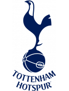 Tottenham Form: WWW Form: WLW |
-0.17 vs -0.75 | 2.54 | 6.61% | 0 | ||
| Mar 9 | Charleroi 0:0 Cercle Brugge Form: DLW Form: DWL |
-0.87 vs -0.2 | 2.02 | 5.93% | 0.5 | 🏥🏥 📉 Home team has MAJOR injuries and a dip in form recently | 🏥 📉 Away team has considerable injuries and a dip in form recently |
| Mar 9 | Vizela 2:1 Farense Form: LDD Form: LLL |
-0.71 vs -0.23 | 3.0 | 5.5% | 0 | 📉 Home team has a dip in form recently | 🏥🏥 📉 Away team has MAJOR injuries and a dip in form recently |
| Mar 8 | Estrela 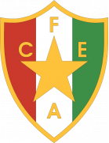 3:1 Casa Pia Form: LDL Form: WWD |
-0.3 vs -0.24 | 3.25 | 5.17% | 0 | ||
| Mar 9 | Genoa 2:3 Monza Form: DWL Form: WWL |
-0.27 vs -0.58 | 2.24 | 4.57% | 0 | 📉 Home team has a dip in form recently | 🏥 Away team has considerable injuries |
| Mar 10 | Las Palmas 0:2 Ath Bilbao Form: LDD Form: WLD |
-0.45 vs -0.27 | 2.08 | 4.62% | 1 | 📉 Home team has a dip in form recently | 📉 Away team has a dip in form recently |
| Mar 11 | Gaziantep 2:0 Besiktas Form: DLL Form: WWL |
-1.31 vs -0.27 | 1.93 | 4.58% | 0 | 🏥🏥 📉 Home team has MAJOR injuries and a dip in form recently | 🏥🏥 Away team has MAJOR injuries |
| Mar 10 | Lecce 0:1 Verona Form: LLD Form: DLW |
-0.28 vs -0.31 | 2.32 | 4.39% | 0 | 📉 Home team has a dip in form recently | 📉 Away team has a dip in form recently |
| Mar 11 | Chelsea 3:2 Newcastle Form: WDD Form: DLW |
-0.32 vs -1.33 | 1.98 | 3.61% | 1 | 🏥🏥 📉 Home team has MAJOR injuries and a dip in form recently | 🏥🏥 📉 Away team has MAJOR injuries and a dip in form recently |
| Mar 9 | Almere City 1:1 Utrecht Form: WLD Form: WWL |
-0.38 vs -0.33 | 2.12 | 3.44% | 0.5 | 📉 Home team has a dip in form recently | 🏥 Away team has considerable injuries |
| Mar 10 | Le Havre 1:0 Toulouse Form: LLL Form: WWW |
-0.34 vs -0.34 | 2.72 | 3.26% | 0 | 📉 Home team has a dip in form recently | 🏥 Away team has considerable injuries |
| Mar 9 | Sassuolo 1:0 Frosinone Form: LLL Form: LLD |
-0.41 vs -0.49 | 2.32 | 1.81% | 1 | 🏥 📉 Home team has considerable injuries and a dip in form recently | 🏥 📉 Away team has considerable injuries and a dip in form recently |
| Mar 10 | Liverpool 1:1 Man City Form: WWW Form: WWW |
-0.57 vs -0.44 | 2.34 | 1.16% | 0.5 | ||
| Mar 10 | Bochum 1:2 Freiburg Form: WLL Form: DLD |
-0.76 vs -0.46 | 3.05 | 0.71% | 1 | 🏥🏥 📉 Home team has MAJOR injuries and a dip in form recently | 🏥 📉 Away team has considerable injuries and a dip in form recently |
| Mar 9 | Crystal Palace 1:1 Luton Form: DWL Form: LLL |
-0.47 vs -0.71 | 1.83 | 0.64% | 0.5 | 🏥🏥 📉 Home team has MAJOR injuries and a dip in form recently | 📉 Away team has a dip in form recently |